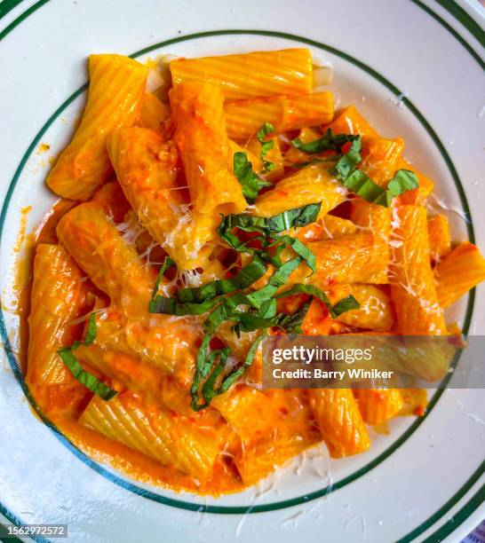

Rigatonia Alla Vodka
Rigatonia Alla Vodka
Home

Vodka sauce is a satisfyingly rich, umami heavy red sauce that pairs wonderfully with a mediumn to large pasta shape. Personally, I prefer rigatoni for this, but penne is more traditional and also works great.
You can reduce the cream by half and still have a delicious result, and you can adjust the red pepper to your taste.
- Whole Peeled Tomatoes - preferred Cento San Marzano/li>
- 1 can tomato paste
- Garlic, a lot, diced or smashed
- 1 medium yellow onion or half of a giant one, diced finely
- 1 box pasta, rigatonia or penne, preferred bronze cut
- 1 cup heavy cream, cut in half if desired
- 1/4 cup vodka, more if desired
- 2 ounces grated parmigianio reggiano, more for serving
- immersion blender
-
Put some olive oil into a large pot and get it heating. Also get a great big pot of water going and salt it - we will need this boiling and ready for our pasta. Dice your onion and smash your garlic. Put the onions in first, and let them
simmer until they becoming translucent. Open your can of tomato paste and have it ready, then add your garlic to the pan. Just as the garlic is starting to get some color, add the tomato paste and stir it around to prevent from burning. Cook this mixture for a few minutes until it smells fragrant.
-
Open your can of peeled tomatoes - hopefully you used a big pot! Add the liquid first, but use your hand to keep the tomatoes from going in. We need to keep the stuff in the pan from burning while we smush the tomatoes. Add tomatoes in one at a time, and crush them. Your hands work best here, so be careful not to burn yourself. Just put them in your hand, put your hand inside the pot, and crush it! You may need to crush in a few places for each tomato - make sure they are well and truly smushed.
You can also use a big wooden spoon for this, but I find it's a bit harder.
-
Now is a good time to put your pasta in the water, as it takes about as long to cook as it will for the sauce to finish at this point. Heat the sauce through and let it simmer down a bit. You can start to season it, but keep in mind we will be adding more liquid later so you might need to add more at the end.
-
Once it's heated through and had a chance to simmer down a bit, maybe for 10 minutes or less, go ahead and add the vodka and cream. Use your immersion blender to blend until smooth.
-
Season generously with salt, black pepper, and add red pepper flakes to your preference, but don't be afraid of them - they really make this dish come alive.
-
Drain pasta, reserve 1/4 cup of the water and add to sauce. Add pasta to sauce and mix to combine. Serve immediately, ideally with a caesar salad that you prepared ahead of time, and garnish each bowl with parmigianio reggiano. Serve with a sangiovese or a super tuscan.